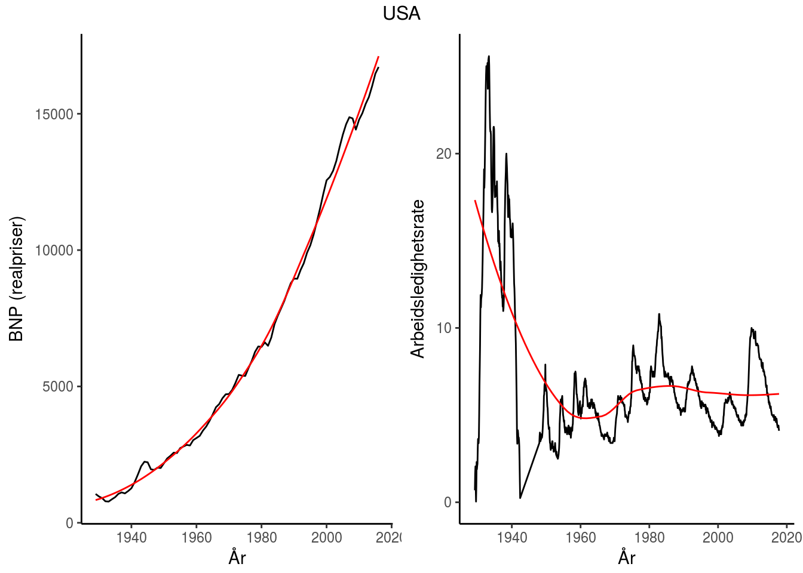

abc
Introduksjon
Tre hovedtemaer:
- Svingninger (del I)
- Økonomisk vekst (del II)
- Økonomiske kriser (del III)

Tre grunnleggende spørsmål blir forsøkt besvart?
- Hva skaper konjunktursvingninger?
- Økonomisk vekst?
- Økonomiske kriser?
Hvilken rolle bør offentlige myndigheter spille?
- Stabiliseringspolitikk (aktiv/passiv)
- Vekstpolitikk (kapitalisme/offentlig sektor)
- Økonomiske kriser (stabiliserende/likvidierende)
Kjente makroøkonomer


#child = 'polanbefalinger.html'Abstraksjon
(Razor’s law)[https://simple.wikipedia.org/wiki/Occam%27s_razor]
Entia non sunt multiplicanda praeter necessitatem (More things should not be used than are necessary). 1. Benytter matematikk
Sentrale aktører i makroøkonomien
Husholdninger (del I, del II og del III)
Konsumerer og sparer
Bedrifter (del I, del II og del III)
Produserer og investerer
Banker og fininstitusjoner (del III)
Sentralbanken (del I og III)
Setter rentenivå
Finansdepartementet (del I og III)
Finanspolitikk
Markedene vi studerer
Godemarkedet (varer og tjenester) - del I, del II og del III
Pengemarkedet - del I, del III
Arbeidsmarkedet - del I, del III
Bankkreditt - del III
Valutakursmarkedet - del I
Størrelsen på en økonomi
Lukket (global økonomi) økonomi
Påvirkes ikke av omverden Tilnærming: USA
Liten åpen økonomi
Påvirkes av, men påvirker ikke selv, omverden Tilnærming: Norge